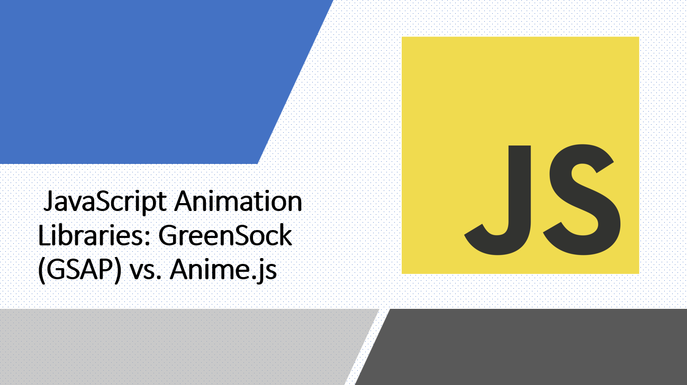

Introduction​
Animation libraries are essential tools for creating dynamic and engaging user experiences on the web. Two popular options in the JavaScript ecosystem are GreenSock (GSAP) and Anime.js.
In this guide, we'll compare these animation libraries in terms of features, performance, ease of use, and use cases, helping you choose the right one for your projects.
Let's deep dive into the world of JavaScript animation libraries!
Suggested Tutorials 📑:​
GreenSock (GSAP) is a JavaScript animation library that provides a wide range of features for creating animations on the web. It's a popular choice for creating complex animations and is used by many large companies, including Google, Microsoft, and Amazon.
GSAP is a paid library, but it offers a free version that can be used for non-commercial projects. The paid version offers additional features and support.
1.1 Installation​
To install GSAP, you can use npm or yarn:
Alternatively, you can use a CDN link:
<script src="https://cdnjs.cloudflare.com/ajax/libs/gsap/3.7.1/gsap.min.js"></script>
1.2 Features​
GSAP offers a wide range of features for creating animations on the web. It provides a simple API for creating animations and offers a wide range of plugins for creating complex animations.
Suggested Tutorials 📑:​
1.2.1 Simple API​
GSAP provides a simple API for creating animations. It offers a wide range of methods for creating animations, including to(), from(), fromTo(), set(), delay(), repeat(), yoyo(), stagger(), and more.
Let's see how we can use the to() method to create a simple animation:
gsap.to(".box", {
duration: 1,
x: 100,
y: 100,
scale: 2,
rotation: 180,
ease: "power2.inOut",
});
In the above example:
- We're using the
to() method to animate the .box element. - We're animating the element's
x and y position, scale, and rotation properties. - We're also specifying the animation's duration and easing function.
1.2.2 Plugins​
GSAP offers a wide range of plugins for creating complex animations. It provides plugins for animating CSS properties, SVG elements, DOM elements, and more.
Let's see how we can use the CSSPlugin to animate the background-color property of an element:
gsap.to(".box", {
duration: 1,
backgroundColor: "red",
});
In the above example:
- We're using the
CSSPlugin to animate the background-color property of the .box element. - We're animating the element's
background-color property from its current value to red.
Suggested Tutorials 📑:​
1.2.3 Timeline​
GSAP provides a Timeline class for creating complex animations. It allows you to create a timeline of animations and control them as a group.
Let's see how we can use the Timeline class to create a timeline of animations:
const timeline = gsap.timeline();
timeline.to(".box", {
duration: 1,
x: 100,
y: 100,
scale: 2,
rotation: 180,
ease: "power2.inOut",
});
timeline.to(".box", {
duration: 1,
backgroundColor: "red",
});
In the above example:
- We're creating a timeline of animations using the
Timeline class. - We're animating the
.box element's x and y position, scale, and rotation properties. - We're also specifying the animation's duration and easing function.
- We're animating the
.box element's background-color property from its current value to red.
GSAP is a high-performance animation library. It uses the requestAnimationFrame() method to animate elements, which allows it to achieve smooth animations even on low-end devices.
1.4 Ease of Use​
GSAP is a very easy-to-use animation library. It provides a simple API for creating animations and offers a wide range of plugins for creating complex animations.
1.5 Use Cases​
GSAP is a great choice for creating complex animations on the web. It's used by many large companies, including Google, Microsoft, and Amazon.
Suggested Tutorials 📑:​
Anime.js is a JavaScript animation library that provides a wide range of features for creating animations on the web. It's a popular choice for creating simple animations and is used by many large companies, including Google, Microsoft, and Amazon.
Anime.js is a free library and is available under the MIT license.
2.1 Installation​
To install Anime.js, you can use npm or yarn:
Alternatively, you can use a CDN link:
<script src="https://cdnjs.cloudflare.com/ajax/libs/animejs/3.2.1/anime.min.js"></script>
2.2 Features​
Anime.js offers a wide range of features for creating animations on the web. It provides a simple API for creating animations and offers a wide range of plugins for creating complex animations.
Suggested Tutorials 📑:​
2.2.1 Simple API​
Anime.js provides a simple API for creating animations. It offers a wide range of methods for creating animations, including anime(), anime.set(), anime.delay(), anime.repeat(), anime.yoyo(), anime.stagger(), and more.
Let's see how we can use the anime() method to create a simple animation:
anime({
targets: ".box",
translateX: 100,
translateY: 100,
scale: 2,
rotate: 180,
easing: "easeInOutSine",
duration: 1000,
});
In the above example:
- We're using the
anime() method to animate the .box element. - We're animating the element's
translateX and translateY properties, scale, and rotate properties. - We're also specifying the animation's duration and easing function.
2.2.2 Plugins​
Anime.js offers a wide range of plugins for creating complex animations. It provides plugins for animating CSS properties, SVG elements, DOM elements, and more.
Let's see how we can use the anime.css plugin to animate the background-color property of an element:
anime({
targets: ".box",
backgroundColor: "red",
});
In the above example:
- We're using the
anime.css plugin to animate the background-color property of the .box element. - We're animating the element's
background-color property from its current value to red.
2.2.3 Timeline​
Anime.js provides a timeline() method for creating complex animations. It allows you to create a timeline of animations and control them as a group.
Let's see how we can use the timeline() method to create a timeline of animations:
const timeline = anime.timeline();
timeline.add({
targets: ".box",
translateX: 100,
translateY: 100,
scale: 2,
rotate: 180,
easing: "easeInOutSine",
duration: 1000,
});
timeline.add({
targets: ".box",
backgroundColor: "red",
});
In the above example:
- We're creating a timeline of animations using the
timeline() method. - We're animating the
.box element's translateX and translateY properties, scale, and rotate properties. - We're also specifying the animation's duration and easing function.
- We're animating the
.box element's background-color property from its current value to red.
Suggested Tutorials 📑:​
Anime.js is a high-performance animation library. It uses the requestAnimationFrame() method to animate elements, which allows it to achieve smooth animations even on low-end devices.
2.4 Ease of Use​
Anime.js is a very easy-to-use animation library. It provides a simple API for creating animations and offers a wide range of plugins for creating complex animations.
2.5 Use Cases​
Anime.js is a great choice for creating simple animations on the web. It's used by many large companies, including Google, Microsoft, and Amazon.
Suggested Tutorials 📑:​
Conclusion​
In this guide, we compared two popular JavaScript animation libraries: GreenSock (GSAP) and Anime.js. We explored their features, performance, ease of use, and use cases, helping you choose the right one for your projects.
If you're looking for a simple animation library, Anime.js is a great choice. If you're looking for a complex animation library, GreenSock (GSAP) is a great choice.
I hope you found this guide useful.
Happy coding! 🥳